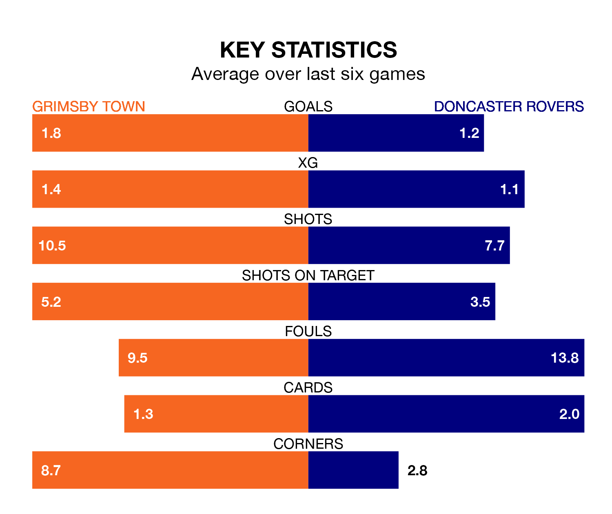

Grimsby Town face Doncaster Rovers at Blundell Park on Saturday looking to secure a first win in six EFL League Two games.
The Mariners have lost three and drawn two matches since they last earned three points – against Salford City on December 29.
They face a Doncaster side who have won one and drawn two over that time.
In the last 10 years, Grimsby and Doncaster have played each other on eight occasions. Grimsby won two of them, Doncaster five, and they drew once.
On average, the Mariners scored 0.8 goals and the Rovers 1.8 in those matches.
Their last meeting was on October 28, when Doncaster won 1-0 at home.
Grimsby are 21st in the table after 30 games, of which they have won six and drawn 11, earning 29 points.
Doncaster are one place ahead of Town in 20th, with nine wins and six draws putting them on 33 points.
With 37 goals in 31 games so far this season, Rovers are scoring at below the league average rate with 1.2 goals per game. And they are conceding more than average, letting in 56 goals at a rate of 1.8 per game.
The Mariners are also below average scorers, with 1.4 goals per game, compared to a league average of 1.5. They have conceded 1.8 goals per game.
In Joe Ironside, the Rovers have one of the league's sharpest shooters so far this season. He has notched 13 goals in 31 appearances, to sit ninth in the scoring charts.
His goal rate of one every 199 minutes is quicker than that of Danny Rose, the hosts' top scorer with a goal every 239 minutes, and a total of 10 goals in 27 games.
Grimsby's last match was on February 10, a 3-1 loss against Stockport County, with Abobaker Eisa getting the goal for the Mariners.
Doncaster drew 2-2 with Salford City last time out, on Tuesday, with Curtis Tilt (own goal) and Hakeem Adelakun on the scoresheet.
Updated: 13:04 (UTC), 16/02/24